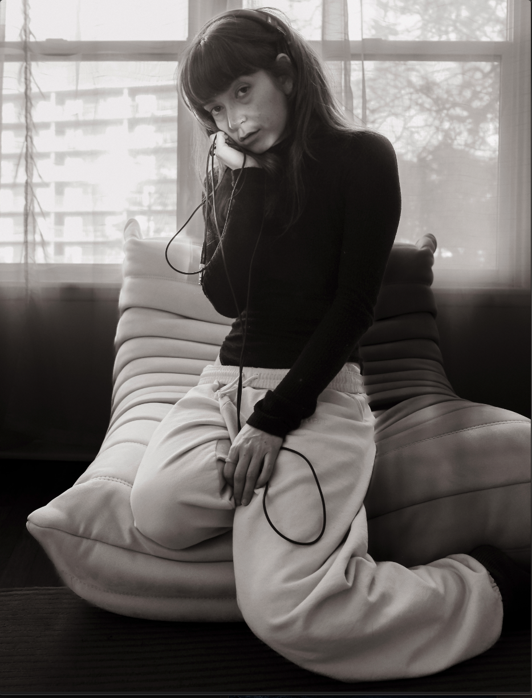

Sarah is an engineer, educator, artist, and creator. She writes, produces, and performs work that lives at the intersection of STEM education and artistic practice. Her audio-visual projects examine the ways scientific understanding can reshape how we see the world.
She studied Biomedical Engineering at Georgia Tech, where she worked in robotics labs, developed inventions, spoke to large audiences at competitions and panels, and helped design curriculum to foster creativity and an entrepreneurial mindset in engineering students.
She has since built products across medical, beauty, arts, and music, and teaches STEM and Maker classes to youth — with a creative, artistic twist.

Contact
For commissions, collaborations, or questions:
For professional inquiries in technical design, visit bluelabs.tech.